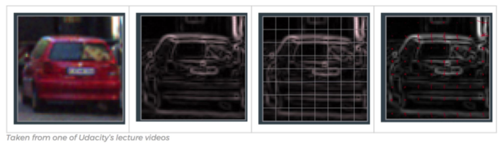

üî¨ Lab10: CV#
üìå Objectives#
Students should be able to explain the concept of Histogram of Oriented Gradients (HOG) and its role in object detection.
Students should be able to train a custom object detector using Dlib and analyze its performance.
Students should be able to implement and test a trained object detector on new images.
Students should be able to create a ROS 2 package for computer vision tasks and integrate OpenCV for image processing.
üìú Overview#
In this lab, we explore how the Histogram of Oriented Gradients (HOG) features, combined with a Support Vector Machine (SVM), enable object detection. By now, we’re all familiar with histograms, but in this context, they help simplify an image so a computer can quickly and accurately identify objects within it.
Rather than analyzing the gradient direction of every single pixel, HOG groups pixels into small cells. Within each cell, the gradient directions are computed and categorized into orientation bins, with stronger gradients carrying more weight. This approach helps reduce the influence of random noise and provides a structured representation of the image. HOG features maintain the distinct shape of an object while allowing for slight variations. For instance, consider an object detector designed to recognize a car:
{kind=link}
Comparing each individual pixel of this training image with another test image would not only be time consuming, but it would also be highly subject to noise. As previously mentioned, the HOG feature will consider a block of pixels. The size of this block is variable and will naturally impact both accuracy and speed of execution for the algorithm. Once the block size is determined, the gradient for each pixel within the block is computed. Once the gradients are computed for a block, the entire cell can then be represented by this histogram. Not only does this reduce the amount of data to compare with a test image, but it also reduces the impacts of noise in the image and measurements.

Now that we understand HOG features, let’s leverage OpenCV and Dlib to build a stop sign detector. First, we need to download a repository containing pre-made test and training data. Keep in mind that we won’t evaluate the algorithm’s effectiveness using the training data—it’s expected to perform well there. Instead, our goal is to use a diverse test set to develop a detector robust enough to recognize stop signs in new images.
üå± Pre-Lab: ROS2 Client Libraries#
Create a package named
lab10_cvwith theBSD-3-Clauselicense and dependencies:rclpycv_bridgesensor_msgsstd_msgsopencv2
Hint: There’s a way to include all dependencies at the time of package creation.
Download the
lab10_prelab.tar.xz. Extract the files and move them to~/master_ws/src/ece387_ws/lab10_cv/test.Open the Jupyter Notebook file,
lab10_prelab.ipynbwith vscode.Click
Select Kernelin the top right corner, choosePython Environments, and select/usr/bin/python3.As you read through the notebook, run the python code by clicking the arrow button in the top left corner.
If the following message pops up, choose
Install
Take a screenshot of the gradient image and submit it on Gradescope.
{kind=link}
üõ†Ô∏è Lab Procedures#
1. Building a detector using HOG features#
Download the example demo.
cd ~/master_ws/src git clone git@github.com:ECE495/HOG_Demo.git cd HOG_Demo
Take a look at what is contained within the repo. Essentially you have both a training data folder and a test folder. We will now use a tool called imglab to annotate the images for building our detector.
Browse to the imglab tool and select “UMM, MAYBE NEXT TIME!”.
In the bottom left of the site, click on the
loadbutton, select thetrainingfolder, and click theuploadbutton. It will upload 19 files.

Select the first stop sign and the “Rectangle” tool.

Highlight the border of the stop sign: drag-and-draw a bounding rectangle, ensuring to only select the stop sign and to select all examples of the object in the image.
üìùÔ∏è NOTE: It is important to label all examples of objects in an image; otherwise, Dlib will implicitly assume that regions not labeled are regions that should not be detected (i.e., hard-negative mining applied during extraction time).
You can select a bounding box and hit the delete key to remove it.
If you press
alt+left/right arrowyou can navigate through images in the slider and repeat highlighting the objects.Once all stop signs are complete hit
ctrl+eto save the annotations (bounding box information) as a “Dlib XML” file within thetrainingfolder using a descriptive name such asstop_annotations.xml.
We now need to create the code to build the detector based on our annotated training data.
cd ~/master_ws/src/HOG_Demo touch trainDetector.py
Now open this in your favorite editor to add the following code. I have built into the code the ability to provide command line arguments. This will make the code a bit more flexible such that you don’t need to recreate it in the future if you want to reuse if for another project. You will provide two arguments at runtime. First you need to tell the program where the .xml file is. Second, you will state where you want to put the detector that you create… the detector should have a .svm extension.
# import the necessary packages from __future__ import print_function import argparse import dlib # construct the argument parser and parse the arguments ap = argparse.ArgumentParser() ap.add_argument("-x", "--xml", required=True, help="path to input XML file") ap.add_argument("-d", "--detector", required=True, help="path to output detector") args = vars(ap.parse_args()) # grab the default training options for the HOG + Linear SVM detector, then # train the detector -- in practice, the `C` parameter can be adjusted... # feel free to research and see if you can improve print("[INFO] training detector...") options = dlib.simple_object_detector_training_options() options.C = 1.0 options.num_threads = 4 options.be_verbose = True dlib.train_simple_object_detector(args["xml"], args["detector"], options) # show the training accuracy print("[INFO] training accuracy: {}".format( dlib.test_simple_object_detector(args["xml"], args["detector"]))) # load the detector and visualize the HOG filter detector = dlib.simple_object_detector(args["detector"]) win = dlib.image_window() win.set_image(detector) dlib.hit_enter_to_continue()
Once you have the code entered, you can run it with the following command. Remember, you need to provide two command line arguments:
cd ~/master_ws/src/HOG_Demo python3 trainDetector.py --xml training/stop_annotations.xml --detector training/stop_detector.svm
You may get a few errors pop up during execution based on your choice for bounding boxes. Make sure you address those errors before continuing. If everything executed correctly, you should ultimately see a picture of the HOG feature you designed.
2. Testing a detector#
Now it is time to build our code to test the detector. The following code will make use of the imutils library as well.
You may get a few errors pop up during execution based on your choice for bounding boxes. Make sure you address those errors before continuing. If everything executed correctly, you should ultimately see a picture of the HOG feature you designed.
Now it is time to build our code to test the detector.
cd ~/master_ws/src/HOG_Demo touch testDetector.py
Enter the code below:
# import the necessary packages from imutils import paths import argparse import dlib import cv2 # construct the argument parser and parse the arguments ap = argparse.ArgumentParser() ap.add_argument("-d", "--detector", required=True, help="Path to trained object detector") ap.add_argument("-t", "--testing", required=True, help="Path to directory of testing images") args = vars(ap.parse_args()) # load the detector detector = dlib.simple_object_detector(args["detector"]) # loop over the testing images for testingPath in paths.list_images(args["testing"]): # load the image and make predictions image = cv2.imread(testingPath) boxes = detector(cv2.cvtColor(image, cv2.COLOR_BGR2RGB)) # loop over the bounding boxes and draw them for b in boxes: (x, y, w, h) = (b.left(), b.top(), b.right(), b.bottom()) cv2.rectangle(image, (x, y), (w, h), (0, 255, 0), 2) # show the image cv2.imshow("Image", image) cv2.waitKey(0)
Run the test detector:
cd ~/master_ws/src/HOG_Demo python3 testDetector.py --detector training/stop_detector.svm --testing test
OK, so how did you do? What surprises did you have? What might you consider to improve the detector?